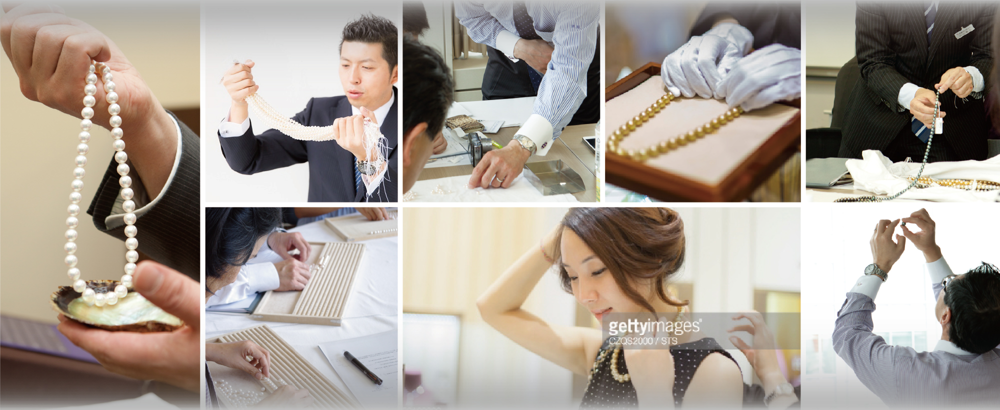

真珠のエキスパートになる。

 資格取得のための３つのコース
資格取得のための３つのコース
検定の種類
 真珠に関わるすべての方に必須の研修
真珠に関わるすべての方に必須の研修
JA 検定
 真珠の美しさを正しく説明できる知識
真珠の美しさを正しく説明できる知識
SA 検定
真珠のプロを目指しませんか？
真珠は、分かりにくいといわれます。
その理由は、鉱石と違い、ひとと自然と貝の共同作業により偶然生み出される宝石であり、ひとつとして同じ珠はなく、
テリやマキ、色、形、サイズ、連相といった美しさの要素がそれぞれ相関性を持って成り立つからでしょう。
真珠のプロとして大切なことは、画一的に語ることのできない真珠の美しさや価値について、まず正しく理解すること
そして、的確に説明できる知識と選択眼を見につけていくことだといえるでしょう。
（一社）日本真珠振興会では、曖昧だった真珠にまつわる価値基準や諸説を整理し、
真珠関係者への教育と資格認定を行う「真珠検定」を２０１４年よりスタートしました。
一般消費者の方に、真珠の美しさや魅力、価値について正しく語ることのできる「真珠の専門家・アドバイザー」の育成に力を入れています。
資格取得が目的でなく、真に真珠のプロとしてお客様に信頼されるアドバイザーとして行動いただくためのプログラムです
検定の話題
コピーが入ります。コピーが入ります。コピーが入ります。コピーが入ります。コピーが入ります。コピーが入ります。コピーが入ります。コピーが入ります。コピーが入ります。コピーが入ります。コピーが入ります。
SA フォローアップ研修
コピーが入ります。コピーが入ります。コピーが入ります。コピーが入ります。コピーが入ります。コピーが入ります。コピーが入ります。コピーが入ります。コピーが入ります。コピーが入ります。コピーが入ります。